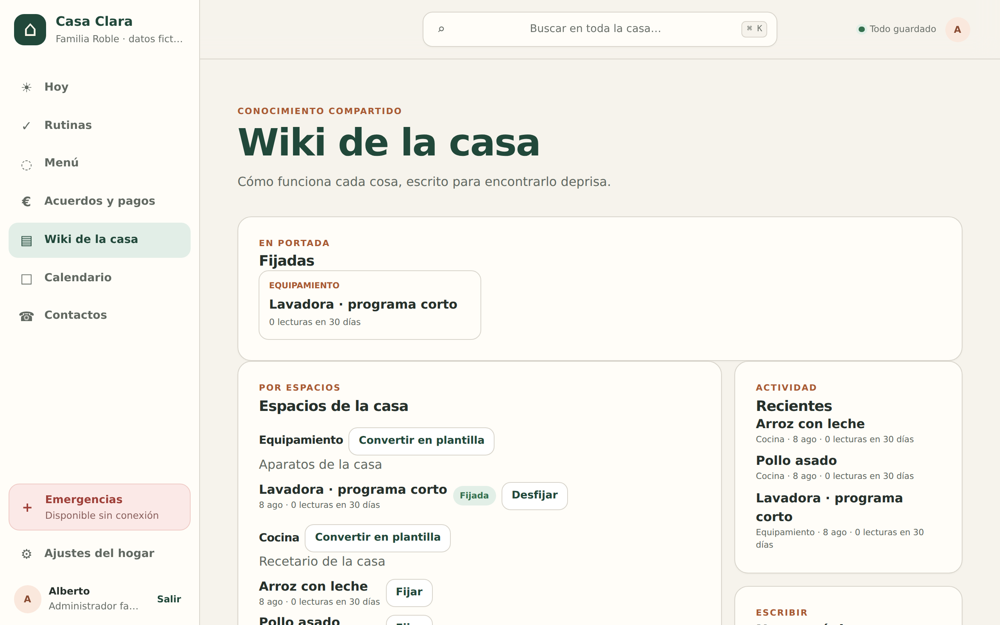
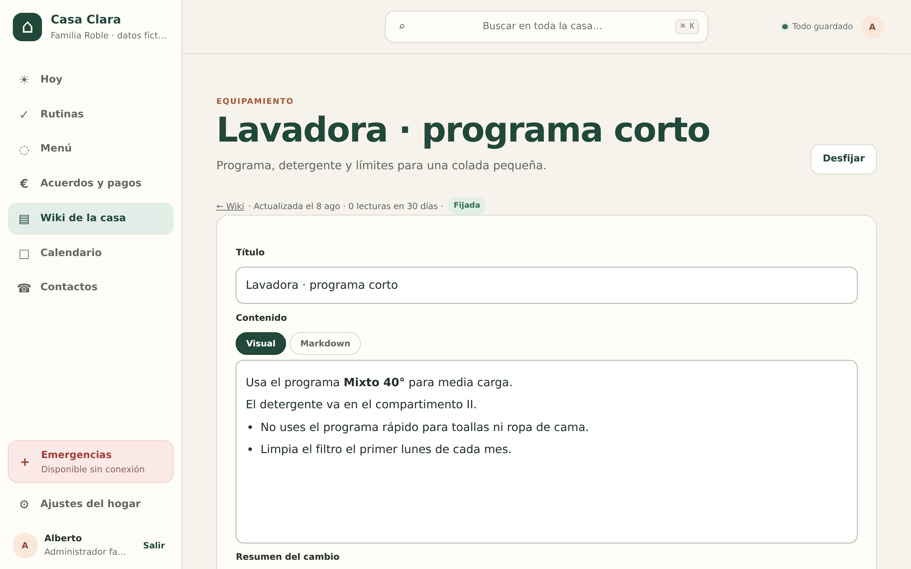
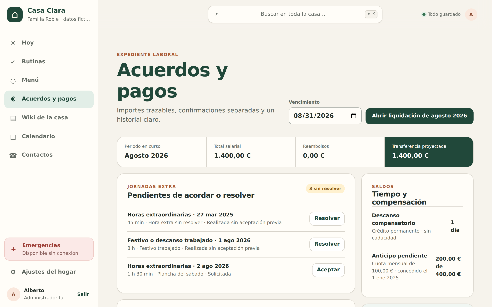
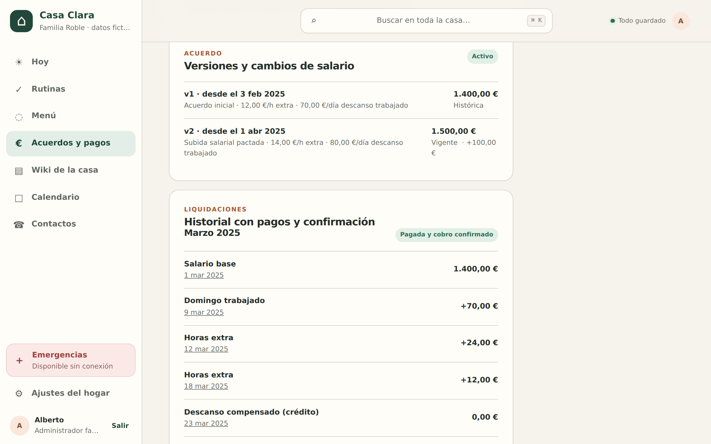
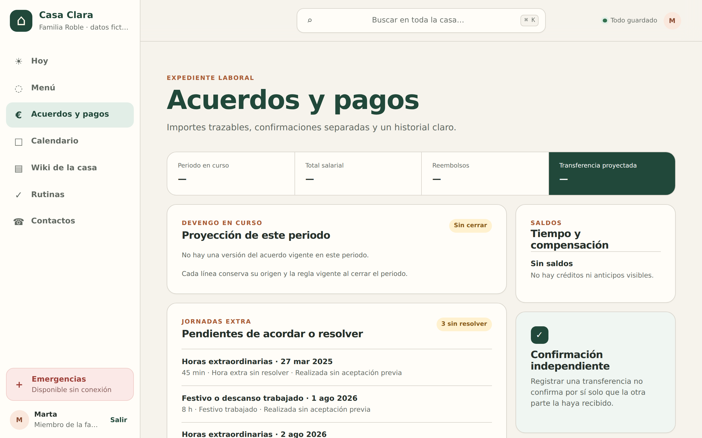
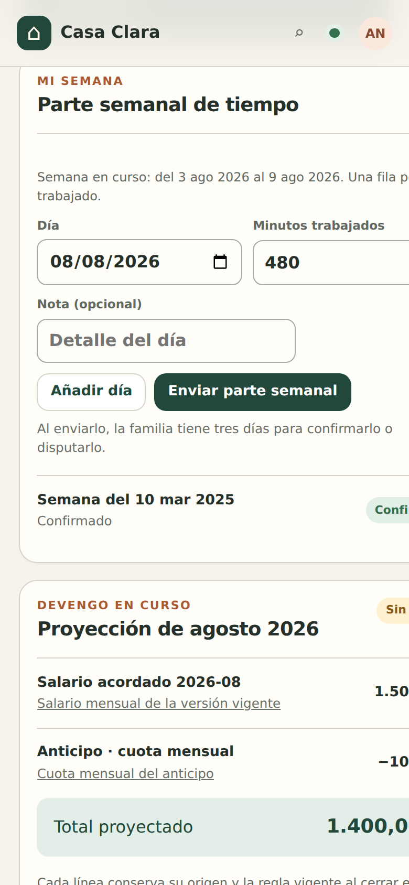

Manual de usuario
Casa Clara, la app de la casa
Casa Clara reúne en un solo sitio el día a día del hogar: lo de hoy, el menú semanal con su lista de la compra, las rutinas, la guía de la casa (la wiki), los contactos y el expediente laboral de la empleada de hogar, con acuerdos, pagos y liquidaciones trazables.
El principio de la casa
Rapidez y pocos toques: lo habitual se hace con un toque desde la pantalla Hoy. Y todo funciona sin cobertura: los cambios se guardan en tu dispositivo y se envían solos cuando vuelve la conexión.
Cada persona entra con su propio acceso y ve exactamente lo que le corresponde. Este manual está organizado por esos papeles: Familia Interna Apoyo Acceso puntual
Todas las capturas de este manual proceden de un hogar de demostración con datos inventados; ningún dato es real.
Para empezar
Primeros pasos
Entrar: sin contraseñas
En Casa Clara no hay contraseñas que recordar. En la pantalla de acceso escribes el correo con el que te invitaron al hogar y pulsas Enviarme un enlace de acceso. Te llega un correo con un enlace que caduca en 10 minutos; al abrirlo, ya estás dentro.

Qué es un hogar
Todo en Casa Clara vive dentro de un hogar: su menú, sus rutinas, su wiki, su expediente. Solo ves los hogares a los que te han invitado, y cada hogar solo ve lo suyo. Quien administra el hogar decide quién entra, con qué papel y hasta cuándo.
Moverse por la app
En pantalla grande, la navegación va en la barra lateral izquierda. En el móvil se convierte en una barra inferior con los cuatro destinos más usados y un botón Más que despliega el resto. El orden se adapta a tu papel: quien trabaja la casa ve Rutinas al frente; la familia ve antes Menú y Acuerdos y pagos.
Emergencias siempre a mano. El acceso a Emergencias está fijo en tres sitios: abajo en la barra lateral, al final de la hoja Más del móvil y como botón + Emergencias en la cabecera de Hoy. Esa pantalla queda guardada en el dispositivo y abre incluso sin cobertura.
Arriba está el buscador Buscar en toda la casa… (atajo ⌘ K en el ordenador): encuentra páginas de la wiki, contactos y más.
El punto verde de la esquina superior indica el estado de guardado: Todo guardado cuando no hay nada pendiente, y en ámbar cuando hay cambios esperando conexión. Tócalo para ver el detalle.

Sección por papel
Familia · administración Familia
Quien administra el hogar lo ve y lo puede todo: organiza el menú y la compra, crea rutinas, escribe la wiki, lleva el expediente laboral completo y gestiona los accesos de las demás personas.
Hoy: el día en una pantalla
Hoy abre con lo importante: el bloque «Necesita tu decisión» (jornadas extra por aceptar o resolver, gastos por aprobar, huecos del menú sin confirmar, liquidaciones pendientes), el menú del día y las rutinas que vencen hoy.

- Ir al asunto pendiente: 1 toque en su botón.
- Marcar una rutina del día: 1 toque en Marcar hecha; la fila queda tachada con el chip «Hecha ✓ · próxima el …».
- Ver el menú completo: 1 toque en Ver la semana →.
Menú semanal, con las alergias a la vista
Menú organiza la semana en cinco franjas (desayuno, almuerzo, comida, merienda y cena) por grupo de comensales. Junto al nombre de cada comensal aparecen sus restricciones alimentarias.

- Asignar un plato: toca Asignar en la franja, elige Receta del recetario o Texto libre, añade notas o raciones si hace falta y pulsa Guardar hueco.
- Alergias: si la receta choca con la restricción de algún comensal, la app bloquea el guardado y te lo dice. Solo se desbloquea marcando «Sé que hay una incompatibilidad y asumo la decisión».
- Confirmar una comida: 1 toque en Confirmar. Si el contenido del hueco cambia después, la confirmación caduca sola: verás «Confirmación caducada: el contenido cambió».
- Repetir semana: Duplicar en la semana siguiente copia toda la semana; puedes elegir otro lunes de destino.
La lista de la compra se hace sola
La pestaña Lista de la compra junta dos cosas: lo que sale de las recetas del menú (marcado «· del menú», con las cantidades ya escaladas a las raciones) y lo que añadís a mano. Está agrupada por secciones del súper: carnicería, despensa, droguería…

- Marcar un artículo comprado: 1 toque en su casilla.
- Añadir algo: formulario «Nuevo añadido» y Añadir a la compra. Puedes elegir un alimento del catálogo o escribir un nombre libre.
Rutinas: cada cosa con su próxima fecha
Las rutinas son tareas que se repiten (diarias, semanales, mensuales o trimestrales) y tienen audiencia: para la familia, para la empleada o para toda la casa. Sin porcentajes ni históricos de rendimiento: solo qué toca y cuándo.

- Marcar una rutina: 1 toque en Marcar hecha (desde Hoy o desde Rutinas). La próxima fecha se reprograma sola.
- Crear una rutina: título, audiencia, frecuencia, cada cuántas y próxima fecha → Crear rutina.
- Cambiar una existente: Editar → Guardar rutina.
Wiki de la casa y su editor visual
La wiki es la memoria de la casa: cómo va la lavadora, qué hacer si se va la luz, el recetario. Se organiza en espacios con páginas, y las más importantes se pueden Fijar en portada.

Para escribir no hace falta saber nada especial: al pulsar Editar en una página se abre el editor visual, donde el texto se ve ya con su formato (negritas, listas, títulos). Quien prefiera Markdown puede cambiar a esa pestaña; son dos vistas del mismo contenido.

- Editar una página: Editar → escribir → guardar. El cambio se ve al instante.
- Página nueva: formulario «Nueva página» (título, espacio, contenido, etiquetas) → Crear página. Puede quedarse en borrador o publicarse directamente.
- Publicar un borrador: Publicar. Los borradores solo los ve la familia.
- Reutilizar estructuras: un espacio puede marcarse con Convertir en plantilla y clonarse con Crear espacio desde plantilla.
Acuerdos y pagos: el expediente laboral
Acuerdos y pagos es el expediente de la relación laboral con la empleada: el acuerdo y sus versiones, los partes semanales, las jornadas extra, los gastos, las liquidaciones mensuales y los pagos. Arriba, el resumen del mes en curso con la transferencia proyectada.

- Parte semanal de la empleada: cuando Ana envía su semana, tienes tres días para confirmarla o disputarla; si no, se confirma sola («Auto-confirmado»).
- Jornada extra solicitada: Aceptar deja constancia del acuerdo previo. Cuando ya está trabajada, Resolver: eliges Pagar en dinero o Compensar con descanso, escribes el motivo y pulsas Confirmar resolución. La tarifa se congela con la versión del acuerdo vigente ese día.
- Gastos: cada gasto adelantado por la empleada se revisa y se decide con Aprobar o Rechazar; los aprobados entran como reembolso en la liquidación.
- Liquidación del mes: Abrir liquidación de … (eliges el vencimiento), después Cerrar liquidación — el servidor construye las líneas desde los hechos registrados y congela los totales — y por último Registrar pago (transferencia, efectivo, Bizum…), con el atajo Pagar todo.

Confirmación independiente
Registrar una transferencia no confirma por sí solo que la otra parte la haya recibido: el cobro lo confirma la empleada por separado. Las dos huellas quedan en el expediente.
Ajustes del hogar: accesos y traspaso

- Acceso temporal: elige fecha y hora en «Nueva caducidad» y pulsa Fijar caducidad (ideal para canguros o ayudas puntuales). Quitar caducidad lo vuelve indefinido.
- Revocar un acceso: Revocar acceso pide confirmación escribiendo REVOCAR y rematando con Revocar acceso ahora. Es inmediato e irreversible desde esa pantalla: la persona pierde el acceso también en los dispositivos donde ya tenía sesión.
- Traspaso operativo: si la casa cambia de manos (o llega una sustitución), Descargar traspaso (apoyo) o Descargar traspaso (familia) genera un ZIP verificable con la wiki publicada, las rutinas, el menú de la semana y los contactos. Nunca incluye el expediente laboral.
Contactos y Emergencias
El directorio agrupa personas y servicios por tipo (salud, casa y vecinos, servicios y averías…). Con Añadir contacto rellenas nombre, teléfono y tipo; la casilla «Destacado: visible en Emergencias y sin conexión» decide cuáles aparecen en la pantalla de Emergencias. Cada tarjeta tiene Llamar (1 toque), Editar y Archivar.
Emergencias es deliberadamente simple: el 112 arriba con su botón Llamar al 112, los contactos destacados debajo y un botón Imprimir para dejar una copia en papel, por ejemplo en la nevera. La pantalla queda guardada en cada dispositivo y abre sin conexión.


Sección por papel
Familia · miembro Familia
Un miembro de la familia (por ejemplo, la pareja de quien administra) maneja el día a día exactamente igual: organiza el menú y confirma comidas, lleva la compra, marca y consulta rutinas, escribe y publica en la wiki, gestiona contactos y usa el calendario y el buscador.
Lo que queda reservado a la administración:
- No ve Ajustes del hogar: no invita, no fija caducidades ni revoca accesos.
- En Acuerdos y pagos consulta el expediente (jornadas pendientes, liquidaciones), pero sin los términos salariales —los importes del acuerdo y los saldos solo los ven la administración y la propia empleada— y sin botones de decisión: no acepta jornadas, no aprueba gastos, no cierra liquidaciones ni registra pagos.

Sección por papel
Interna / empleada de hogar Interna
Ana trabaja y vive en la casa, así que su Casa Clara está pensada para el móvil y para el mínimo de toques: su día en Hoy, el menú, la compra, y su propio expediente laboral con la misma información que ve la familia.
Su día en Hoy
Al abrir la app, Hoy le muestra sus rutinas del día en «Necesita tu decisión» y el menú con lo que toca cocinar.
- Marcar una rutina: 1 toque en Marcar hecha. Queda tachada al instante con «Hecha ✓ · próxima el …», aunque no haya cobertura.
- El menú del día indica con chips qué está Confirmado y qué sigue Sin confirmar. La confirmación del menú la hace la familia; si algo aparece sin confirmar a la hora de cocinar, pregunta antes.
- Emergencias: siempre a un toque con el botón + Emergencias.

Su expediente: parte semanal
En Pagos (así aparece en la barra del móvil) Ana ve su acuerdo, la proyección del mes y su historial completo. Cada semana envía su parte de tiempo:
- Una fila por día trabajado: fecha y minutos (con Añadir día para más filas y una nota opcional).
- Enviar parte semanal. Desde ese momento, la familia tiene tres días para confirmarlo o disputarlo; si no dice nada, queda confirmado.
- Una semana enviada no se puede reenviar; el historial muestra su estado: Enviado, Confirmado, Auto-confirmado o Disputado.

Jornadas extra, gastos y compensaciones
- Registrar una jornada extra: tipo (Horas extraordinarias o Festivo o descanso trabajado), fecha, minutos y nota → Registrar jornada extra. Queda «Solicitada» a la espera de la familia.
- Cuando la haces: si la jornada ya estaba aceptada, márcala con Marcar realizada.
- Gastos adelantados: Añadir gasto con concepto, importe y justificante (foto del tique). Aprobado, vuelve como reembolso en la liquidación.
- Compensaciones de descanso: cuando una jornada se resuelve «con descanso», se apunta como crédito a tu favor. Ese crédito es permanente: nunca caduca; en Saldos aparece como «Crédito permanente · sin caducidad».
- Cobros: cuando la familia paga la liquidación, confirmas tú con Confirmar cobro. Tu confirmación queda registrada aparte del pago.
- Tu copia: Descargar mi expediente (PDF + CSV) te da un ZIP con liquidaciones, pagos, jornadas, partes, gastos y saldos. Es tuyo y te lo llevas cuando quieras.

Menú y compra
Ana consulta el menú de la semana con las restricciones de cada comensal a la vista, y en la Lista de la compra puede añadir lo que falta y marcar (1 toque) lo comprado. Lo que viene del menú aparece con la nota «· del menú» y las cantidades calculadas.
Emergencias, siempre
La pantalla de Emergencias con el 112 y los contactos destacados funciona también sin cobertura, y en el móvil vive dentro de Más además del botón fijo en Hoy.


Sección por papel
Apoyo del hogar y acceso puntual Apoyo Acceso puntual
Apoyo del hogar
El papel de apoyo (una ayuda externa que viene algunas horas, como Lucía) ve lo necesario para trabajar en la casa, sin nada económico:
- Hoy y las Rutinas de su audiencia, que puede marcar con Marcar hecha.
- El Menú y la lista de la compra, en modo consulta.
- La Wiki de la casa (solo lectura) y el buscador.
- Contactos y Emergencias.
No ve Acuerdos y pagos, ni el calendario, ni los ajustes.
Acceso puntual (visor)
El acceso puntual (un canguro una noche, como Diego) es de solo consulta: Hoy como resumen del día —sin poder marcar nada; la propia pantalla lo dice: «Tu acceso permite consultar el día, pero no marcar rutinas»—, el Calendario, los Contactos y Emergencias.
Para estos papeles conviene fijar una caducidad del acceso en Ajustes: cuando pasa la fecha, la puerta se cierra sola.
| Sección | Familia admin. | Familia miembro | Interna | Apoyo | Puntual |
|---|---|---|---|---|---|
| Hoy y rutinas | Todo | Todo | Marca las suyas | Marca las suyas | Solo consulta |
| Menú | Edita y confirma | Edita y confirma | Consulta | Consulta | — |
| Lista de la compra | Añade y marca | Añade y marca | Añade y marca | Consulta | — |
| Wiki | Escribe y publica | Escribe y publica | Lee | Lee | — |
| Acuerdos y pagos | Decide todo | Consulta sin importes | Su expediente | — | — |
| Contactos | Edita | Edita | Consulta | Consulta | Consulta |
| Emergencias | Sí | Sí | Sí | Sí | Sí |
| Ajustes del hogar | Sí | — | — | — | — |
Conceptos
Cómo funciona, en lenguaje llano
Funciona sin cobertura
Cuando marcas, asignas o registras algo, la app responde al instante y guarda el cambio en tu dispositivo. Si hay conexión, lo envía en el acto; si no, lo envía solo cuando la conexión vuelve. Nunca esperas a la red.
- La nota de guardado te dice siempre la verdad, con el mismo lenguaje en toda la app: en verde cuando el cambio está confirmado («Cambio sincronizado»), en ámbar cuando está «guardado en este dispositivo» a la espera de red, y en rojo si el servidor lo rechazó, con la causa.
- El punto de estado de la esquina resume lo global: «Todo guardado», «N cambios pendientes», «Sincronizando…» o «Sin conexión». Sin conexión, un aviso recuerda que «el contenido crítico guardado sigue disponible».
- Emergencias se guarda por adelantado en cada dispositivo: abre aunque nunca la hayas visitado y no haya cobertura.
Y si algo no puede entrar: el triaje
Si un cambio guardado en el dispositivo llega tarde y choca con otro más reciente (o el servidor lo rechaza), no se pierde ni se pisa nada en silencio: aparece la tarjeta «Cambios sin sincronizar · Revisión necesaria» en Hoy y en Acuerdos y pagos, con cada cambio y dos salidas: Reintentar o Descartar (descartar solo lo elimina de tu dispositivo). La app nunca dice «se sincronizará» de algo que en realidad fue rechazado.
El expediente es un libro contable
Todo lo laboral —partes, jornadas, gastos, liquidaciones, pagos— se anota, no se borra. Las correcciones se registran como nuevas anotaciones, igual que en un libro de cuentas: por eso el historial siempre cuadra y cualquier línea de una liquidación puede rastrearse hasta el hecho y la versión del acuerdo que la originaron. Los cambios de salario crean una versión nueva del acuerdo con su fecha; las tarifas de cada jornada se congelan al resolverla, aunque el salario cambie después.
Privacidad
- Cada hogar, lo suyo. La separación entre hogares está garantizada en la propia base de datos, no solo en la pantalla.
- Cada papel, lo justo. Los importes salariales, por ejemplo, solo los ven la administración y la propia empleada.
- Calendario: hoy muestra contenido de demostración (la propia pantalla lo avisa); la conexión con calendarios reales llegará mediante enlaces ICS protegidos con clave revocable.
- Demostraciones siempre sintéticas. Los entornos de prueba avisan («Entorno sintético: no introduzcas datos reales») y no admiten datos de personas reales.
Dudas rápidas
Preguntas frecuentes
- ¿Y si marco una rutina por error?
-
No hay botón de deshacer: al marcarla, la próxima fecha se reprograma según su frecuencia. Si era importante hacerla hoy de verdad, avisa a la familia para que ajuste la «próxima fecha» editando la rutina (Editar → Guardar rutina).
- No me llega el enlace de acceso.
-
Revisa la carpeta de spam y comprueba que escribiste exactamente el correo con el que te invitaron: por seguridad, la app responde lo mismo exista o no la cuenta. Recuerda que cada enlace caduca a los 10 minutos; si se pasó, pide otro. Si sigue sin llegar, pide a quien administra el hogar que confirme tu correo.
- ¿Qué pasa si me quedo sin internet a mitad de faena?
-
Nada que debas hacer tú: sigue marcando y registrando con normalidad. Verás el aviso «Sin conexión» y la nota ámbar de «guardado en este dispositivo»; cuando vuelva la cobertura, los cambios se envían solos y la nota pasa a verde. Emergencias sigue abriendo siempre.
- ¿Pueden pisarse los cambios si dos personas tocan lo mismo?
-
No en silencio. Si tu cambio llega cuando ya existe otro más reciente, entra en «Revisión necesaria»: miras la pantalla actual y decides Reintentar o Descartar. Con las confirmaciones del menú pasa igual: si el plato cambió después de confirmarse, la confirmación caduca sola y se pide de nuevo.
- ¿Caducan las compensaciones de descanso?
-
No. Nunca. Cada descanso acordado queda como «Crédito permanente · sin caducidad» en los saldos del expediente, y ahí sigue hasta que se disfruta.
- ¿Puedo borrar una liquidación o corregir un pago equivocado?
-
Borrar, no: el expediente es un registro que no se tacha. Lo que se hace es anotar la corrección (por ejemplo, el ajuste correspondiente en la siguiente liquidación), de modo que quede rastro de las dos cosas.
- ¿Cómo me llevo mis datos?
-
La empleada descarga su expediente completo con Descargar mi expediente (PDF + CSV). La familia genera desde Ajustes el traspaso operativo de la casa (wiki, rutinas, menú y contactos) con Descargar traspaso; ese paquete nunca incluye el expediente laboral.
- ¿Por qué una comida aparece como «Sin confirmar»?
-
Porque nadie de la familia la ha confirmado todavía, o porque el contenido cambió después de confirmarla. Confirmar es un toque en Confirmar y sirve para que quien cocina sepa que ese plato está revisado, alergias incluidas.
Manual de Casa Clara · elaborado sobre el comportamiento real de la aplicación, con capturas de un hogar de demostración con datos exclusivamente sintéticos.